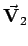

Reines Wirbelfeld wird ein Feld  genannt, manchmal auch solenoides Vektorfeld, dessen Divergenz überall gleich Null ist; dieses Feld ist also quellenfrei. Ist die Wirbeldichte , dann gilt:
Die Wirbeldichte kann nicht beliebig gegeben sein, sondern muß der Gleichung genügen. Mit dem Ansatz
| (13.127b) |
ergibt sich gemäß (13.94)
| (13.127c) |
Somit genügt formal der POISSONschen Differentialgleichung wie das Potential U eines wirbelfreien Feldes  und heißt deshalb Vektorpotential. Für jeden beliebigen Punkt P gilt dann
und heißt deshalb Vektorpotential. Für jeden beliebigen Punkt P gilt dann
| (13.127d) |
Die Bedeutung von  ist die gleiche wie in (13.126b); die Integration erfolgt über den gesamten Raum.
ist die gleiche wie in (13.126b); die Integration erfolgt über den gesamten Raum.